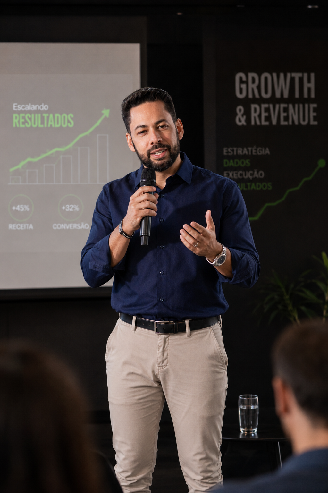

Ajudo empresas a estruturarem operações de Growth, Revenue e Expansão através da integração entre estratégia, marketing, comercial, automação e inteligência artificial, transformando crescimento em processo, não em acaso.
Não sou uma agência de marketing, nem um operador de campanhas. Sou um executivo de Growth & Revenue que atua na interseção entre estratégia, marketing, comercial, automação e inteligência artificial, estruturando operações de crescimento para empresas que precisam de previsibilidade, escala e posicionamento.

Com mais de 18 anos de experiência em marketing, comunicação, tecnologia, transformação digital e inteligência artificial aplicada a negócios, atuo conectando estratégia, marketing, vendas, dados e automação para gerar crescimento previsível, escalável e sustentável.
Hoje lidero a RAISE, uma boutique estratégica de Growth, Revenue e Inteligência Artificial. Atuo como Advisor Estratégico e Fractional Head of Growth para empresas B2B que precisam estruturar suas operações de marketing, vendas e crescimento de forma previsível e escalável.
Formação em Relações Públicas, com MBA em Gestão Estratégica de Negócios. Fundador da Karoo Comunicação por 11 anos, onde desenvolveu base sólida em estratégia, branding e desenvolvimento de negócios antes de migrar para atuação executiva em growth e revenue.
Growth, Revenue, Expansão e Inteligência Artificial não funcionam isolados. Funcionam como um sistema, e é esse sistema que estruturo nas empresas com as quais trabalho.
Growth Strategy, Go-to-Market, Demand Generation, Growth Operations, aquisição de clientes e crescimento de pipeline orientado por dados.
Revenue Operations, integração entre marketing e vendas, estruturação comercial, CRM, qualificação de SQLs e Sales Enablement.
Expansão empresarial, transformação digital, escalabilidade operacional, novos negócios e posicionamento estratégico de marca.
IA aplicada a negócios e marketing, automação de processos, agentes inteligentes, produtividade e suporte à tomada de decisão.
A RAISE não é uma agência e não presta consultoria operacional. É uma operação premium de advisory estratégico para empresas que já têm operação comercial estruturável e precisam de direção, método e execução de alto nível.
Avaliação completa da operação de crescimento: marketing, vendas, dados, automação e posicionamento. Mapeamento de gaps e oportunidades com plano de ação priorizado.
Acompanhamento estratégico recorrente para liderança e times de marketing e vendas, com direção de growth, revenue operations e integração entre áreas, em uma cadência fixa de decisões e indicadores.
Atuação executiva compartilhada: liderança de growth e revenue dentro da empresa, em regime fracionado, cobrindo estratégia, estruturação de time, processos e IA aplicada ao crescimento.
Um framework estruturado para transformar crescimento em processo, da leitura inicial da operação até a execução contínua de growth e revenue.
Diagnóstico completo da operação atual de growth, revenue, marketing e vendas, com identificação de gargalos, gaps e oportunidades de crescimento.
Desenho do go-to-market, do funil de aquisição e da integração entre marketing e vendas: a estrutura que sustenta o crescimento.
Aplicação de IA e automação aos processos de marketing, vendas e gestão, trazendo eficiência operacional e dados a serviço da decisão.
Estruturação do time e dos processos comerciais para sustentar a expansão: revenue operations, CRM, sales enablement e SQLs.
Acompanhamento via Growth Advisory ou Fractional Head of Growth, com cadência de decisões, indicadores e ajustes de rota.
Desafio: expandir nacionalmente e ampliar a capacidade de aquisição de clientes.
Estratégia: estruturação de marketing, posicionamento e processos de aquisição.
Desafio: estruturar o negócio para crescimento acelerado.
Estratégia: implementação de processos, automação e melhoria da operação comercial.
Desafio: expandir atuação nacional e fortalecer o posicionamento da marca.
Estratégia: growth, geração de demanda, expansão comercial e posicionamento, com atuação como Head de Growth & Revenue.
O primeiro passo é um Diagnóstico Estratégico: uma leitura objetiva da sua operação de growth, revenue e marketing, com gaps, oportunidades e plano de ação priorizado.